임진수 | AI Agent 개발 경험 포트폴리오
대규모 엔터프라이즈 시스템 개발·운영 경험을 바탕으로, 폐쇄망 AI Agent 플랫폼 적용 및 운영, Microsoft 365 MCP Platform 설계, 문서 검색형 RAG PoC 구현을 직접 다뤄온 내용의 포트폴리오입니다.
본 문서는 제출용 문서 특성상 일부 내부 정보·식별자·접속 정보는 비식별화하거나 축약해 정리했습니다.
개요
저는 오랜 기간 대기업 엔터프라이즈 환경에서 업무시스템을 개발·운영하며, 데이터 정합성, 배포 통제, 장애 대응, 복잡한 요구사항의 구조화를 경험해 왔습니다. 최근에는 이러한 운영형 개발 역량을 바탕으로 Python/FastAPI, LangGraph, MCP, RAG 기반의 AI Agent 시스템을 실제 업무와 시스템에 연결하는 일에 집중하고 있습니다.
이 포트폴리오는 크게 세 부분으로 구성했습니다. 첫 번째는 폐쇄망 환경에서 Enterprise AI Agent 플랫폼을 운영 가능한 구조로 정착시키고, Supervisor–Task Agent–Prompt–State–Streaming 흐름을 이해하며 확장한 경험입니다. 두 번째는 Microsoft 365 기능을 AI Agent에서 안전하게 재사용할 수 있도록 공통 인증·로깅·토큰 컨텍스트를 분리한 MCP Platform 설계 경험입니다. 마지막은 차량 매뉴얼 PDF를 의미 단위로 파싱하고, 임베딩 적재와 하이브리드 검색까지 직접 구현한 문서 검색형 RAG PoC입니다.
목차
본 문서는 브로셔형 요약 포트폴리오를 장문형 문서로 확장한 작업본입니다. 프로젝트별 배경, 문제 정의, 아키텍처, 설계 판단, 코드 예시, 캡처 삽입 자리까지 함께 정리했습니다.
- 1. 자기소개 및 커리어 요약
- 2. 포트폴리오 구성과 주요 기술
- 3. Project I. 폐쇄망 Enterprise AI Agent 적용 및 운영
- 3-1. 프로젝트 배경과 목표
- 3-2. 플랫폼 아키텍처
- 3-3. LangGraph Workflow와 상태 관리
- 3-4. Dynamic Prompt와 Safety Guard
- 3-5. 뉴스 큐레이션 Agent
- 3-6. 법무서비스 Agent
- 3-7. 설계 판단과 회고
- 4. Project II. Microsoft 365 MCP Platform 설계 및 구현
- 4-1. 문제 정의와 설계 원칙
- 4-2. 위임 권한 / 앱 권한 분리 전략
- 4-3. 공통 서비스 + 도메인별 FastMCP 구조
- 4-4. 요청 상태, 로깅, 추적성 설계
- 5. Project III. 차량 매뉴얼 문서 검색형 RAG PoC
- 5-1. 문제 정의
- 5-2. PDF 파싱과 청킹 전략
- 5-3. 임베딩 적재 파이프라인
- 5-4. 하이브리드 검색 설계
- 5-5. 결과, 한계, 확장 아이디어
- 6. 종합 정리: 구현하고 싶은 엔지니어링 가치
- 7. 부록
1. 자기소개 및 커리어 요약
제 커리어의 출발점은 전형적인 업무시스템 개발이었습니다. 청구·수납·회계·예약·차량 가용성 같은 비즈니스 핵심 로직을 백엔드, 화면, DB 수준에서 구현했고, 차세대 전환, 시스템 통합, 데이터 마이그레이션, 운영 안정화까지 경험했습니다. 이 과정에서 기능 구현만으로는 서비스가 완성되지 않는다는 점을 반복적으로 배웠습니다.
실제 서비스는 데이터가 맞아야 하고, 배포가 가능해야 하며, 장애가 나면 복구할 수 있어야 하고, 복잡한 업무 요구사항을 구조화하여 운영 가능한 수준까지 연결할 수 있어야 합니다. 최근 AI Agent 프로젝트에 참여하면서도 이 관점은 그대로 유지되었습니다. 저는 LLM 응답 자체보다, LLM이 업무 시스템과 데이터를 안전하게 호출하고 실제 흐름 속에서 동작할 수 있게 만드는 구조에 더 관심을 두고 있습니다.
핵심 역량 요약
- 대규모 엔터프라이즈 환경의 백엔드·DB·운영 안정화 경험
- 폐쇄망/보안 제약 환경에서의 AI Agent 적용 경험
- LangGraph로 Planner–Executor–Reporter 흐름 직접 구현
- MCP, Microsoft Graph, 인증·로깅·토큰 컨텍스트 설계
- 문서 검색형 RAG PoC에서 파싱–임베딩–검색 파이프라인 구현
제가 만드는 AI는 “답을 잘하는 모델”에서 끝나지 않습니다.
실제 시스템과 데이터를 연결하고, 운영 제약을 반영하며, 로그와 권한, 재시도와 상태를 고려한 뒤에도 서비스로 버틸 수 있어야 한다고 생각합니다.
2. 포트폴리오 구성과 주요 기술
이번 포트폴리오는 여러 프로젝트를 나열하기보다, 크게 세 부분으로 나누어 정리했습니다. 첫 번째는 실제 업무 환경에 적용한 Enterprise AI Agent 프로젝트, 두 번째는 외부 시스템 연동을 위한 MCP Platform 설계, 마지막은 문서 검색형 RAG PoC입니다.
| 구성 | 핵심 질문 | 주요 기술 | 강조하고 싶은 점 |
|---|---|---|---|
| Enterprise AI Agent | 복잡한 업무 요청을 어떻게 안전하고 운영 가능한 흐름으로 풀 것인가? | FastAPI, LangGraph, Dynamic Prompt, Prompt Guard, SSE | 상태, 계획, 도구 실행, 피드백 루프가 있는 실제 서비스 구조 이해 |
| MCP Platform | 외부 시스템 기능을 AI Agent에서 어떻게 표준화해 재사용할 것인가? | MCP, Microsoft Graph, MSAL, FastAPI, FastMCP | 공통 인증/로깅/추적성 + 도메인 기능 분리 설계 |
| Document RAG | 복잡한 PDF 문서를 검색 가능한 지식으로 어떻게 바꿀 것인가? | PyMuPDF, e5-large, Supabase, Hybrid Search | 파싱 → 청킹 → 적재 → 검색까지 직접 구현 |
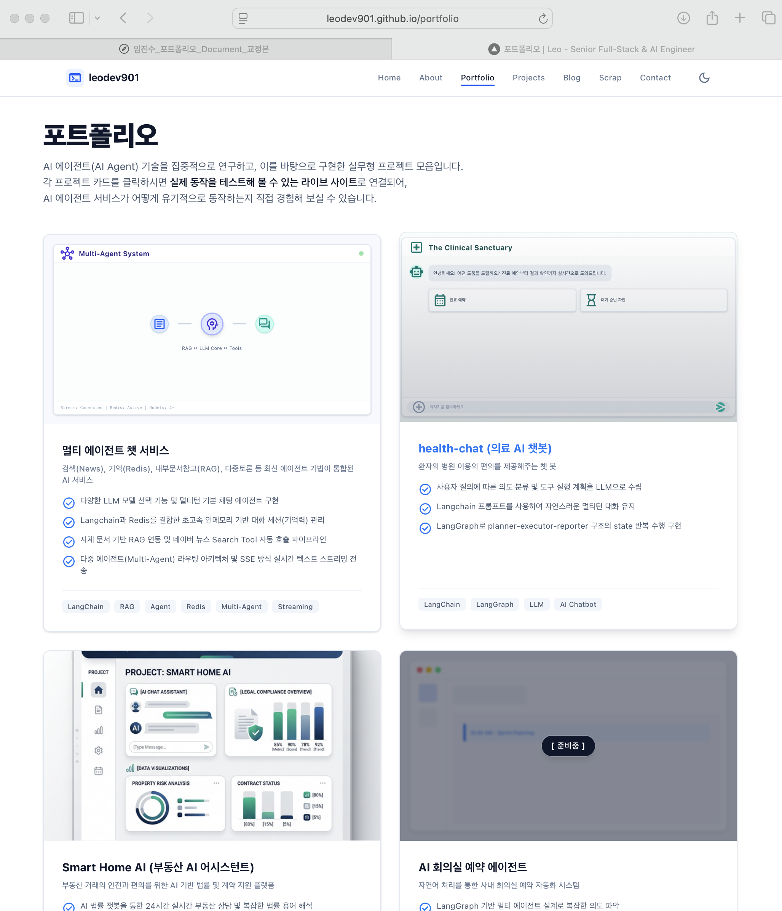
3. 폐쇄망 Enterprise AI Agent 적용 및 운영
이 장은 제가 가장 넓은 범위로 참여한 프로젝트를 다룹니다. 핵심은 하나의 챗봇을 만드는 데 그치지 않고, 엔터프라이즈급 AI Agent 플랫폼을 폐쇄망 환경에 정착시키고 여러 업무에 적용할 수 있는 구조를 이해하고 확장하는 일이었습니다.
플랫폼 수준에서는 AI-Chat, Task-Agent, File Manager, Scheduler로 역할을 나누고, 사용자 요청은 Supervisor 패턴을 통해 적절한 Agent로 라우팅합니다. Task-Agent 내부에서는 LangGraph 기반 워크플로우가 동작하며, Planner–Executor–Reporter 구조와 상태(State) 공유, 확인(Confirm) 흐름, Prompt Guard, Dynamic Prompt, SSE 스트리밍, 회사별 스키마 분리 같은 운영 요소가 포함됩니다.
[사용자 요청]
│
▼
[AI-Chat / Supervisor]
├─ Prompt Guard
├─ Intent Routing
└─ Session / History / Streaming Control
│
▼
[Task-Agent Service]
├─ LangGraph Workflow
│ ├─ StateInit
│ ├─ Router
│ ├─ Selector
│ ├─ Planner
│ ├─ Executor
│ ├─ Manager
│ └─ Reporter
└─ 업무별 Agent 적용
├─ 뉴스 큐레이션
├─ 법무서비스
├─ 회의실/일정 Agent
└─ 기타 도구형 Agent
3-1. 프로젝트 배경과 목표
폐쇄망 환경에서의 AI Agent 프로젝트는 일반적인 웹 기반 AI 서비스와 성격이 다릅니다. 외부 API 연결이 제한되고, 모델 선택과 배포 경로가 바뀌며, 로그·토큰·사용자 정보·대화 상태를 추적하는 방식도 별도로 정리해야 합니다. 또한 사내 서비스로 자리 잡기 위해서는 단순한 답변 품질만이 아니라, 요청이 어디로 라우팅되고 어떤 도구가 호출되며 어떤 상태가 저장되는지까지 관리되어야 합니다.
제 역할은 이러한 플랫폼을 이해하고, FastAPI 백엔드, LangGraph 워크플로우, Prompt 체계, 스트리밍 응답, 모델 전환, 배포 환경 정착을 중심으로 실제로 돌아가게 만드는 것이었습니다. 특히 모델 전환 시 프롬프트와 응답 형식이 바뀌면 서비스 품질에 바로 영향을 줬기 때문에, 워크플로우와 Prompt를 함께 바라보는 시각이 중요했습니다.
해결해야 했던 문제
- 폐쇄망 환경으로의 서비스 이관과 운영 안정화
- Supervisor–Task Agent 구조 이해 및 영향 범위 분석
- 모델 변경에 따른 Prompt 및 응답 품질 보정
- 업무별 Agent 적용을 위한 공통 구조 파악
- 로그, 상태, 이력, 스트리밍 응답을 함께 관리하는 구조 정리
이 프로젝트에서 강조하고 싶은 점
- AI 서비스를 백엔드/운영 관점에서 이해하는 능력
- LangGraph를 “샘플”이 아닌 “서비스 워크플로우”로 해석하는 능력
- Prompt, State, Tool, Streaming을 하나의 흐름으로 묶는 시각
- 업무별 Agent 적용 시 공통부와 개별부를 구분하는 설계 감각
3-2. 플랫폼 아키텍처
플랫폼은 크게 네 개의 서비스로 나뉩니다. AI-Chat은 사용자 대화 진입점이자 Supervisor 역할을, Task-Agent는 실제 LangGraph 워크플로우 실행을 담당합니다. File Manager는 파일 업로드/다운로드, Scheduler는 배치 작업을 처리합니다. 사용자 경험, LLM 처리, 파일 처리, 비동기 작업이 서비스별로 분리되어 각 역할이 섞이지 않습니다.
Figure 2. 폐쇄망 Enterprise AI Agent 플랫폼의 개략 구조
아키텍처 해석 포인트
| 구성 요소 | 주요 역할 | 왜 중요한가 |
|---|---|---|
| AI-Chat / Supervisor | 사용자 요청 수신, 세션 초기화, Agent 선택, SSE 응답 중계 | 사용자 경험과 Task-Agent의 실행 흐름을 분리함 |
| Task-Agent | LangGraph 기반 상태·계획·도구 실행의 실제 처리 | 업무별 Agent 적용의 핵심 엔진 |
| File Manager | 첨부파일 로딩, 검증, 토큰 제한 체크 | 파일 포함 대화의 컨텍스트 신뢰도를 높임 |
| Scheduler | 배치 및 예약 작업 관리 | 뉴스 큐레이션 같은 정기성 업무를 지원 |
| DB / Checkpoint | 세션 이력, 상태 저장, 복원 | Confirm 플로우와 멀티턴 연속성 유지에 필수 |
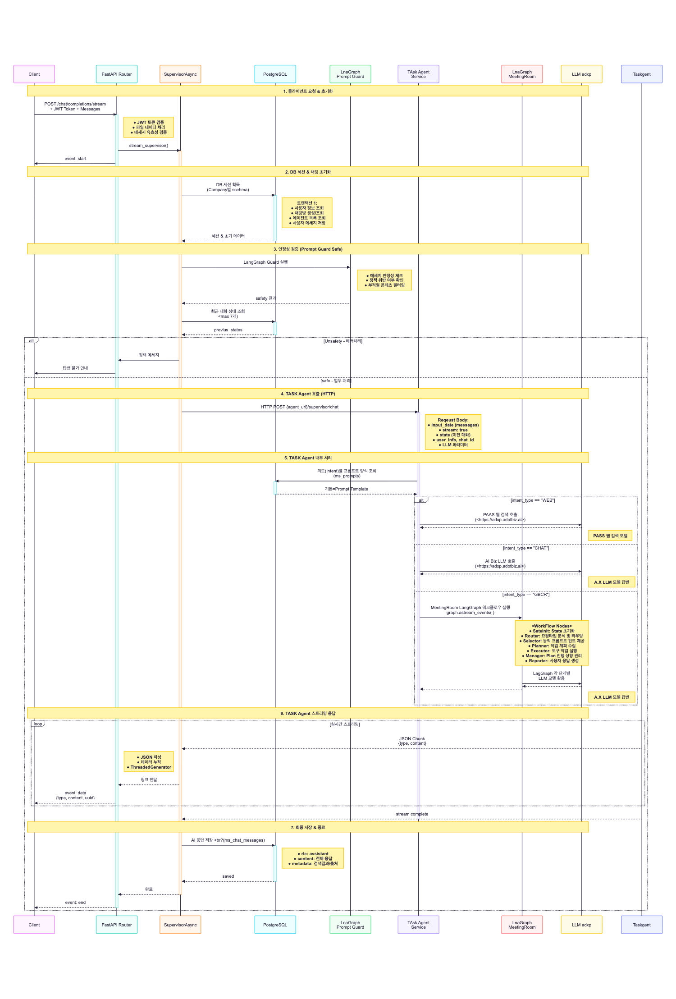
3-3. LangGraph Workflow와 상태 관리
이 플랫폼에서 실제로 흥미로웠던 부분은 LangGraph를 튜토리얼 예제 수준이 아니라 업무 플로우 엔진으로 쓴다는 점이었습니다. 요청은 `state_init → router → selector → planner → executor → manager → reporter` 순으로 흘러가며, 각 노드는 공유 State를 읽고 쓰면서 다음 노드를 결정합니다. 특히 confirm 플로우가 필요한 경우에는 ReverseQuestioner와 Checkpointer가 함께 동작합니다.
Figure 3. Planner–Executor–Reporter 루프와 Confirm 플로우
State가 중요한 이유
LangGraph에서 State는 단순한 변수 묶음이 아니라, 각 노드가 이어받는 공유 칠판에 가깝습니다. `next`, `plan`, `current_step`, `function_response`, `tool_calling_history`, `dynamic_prompts`, `comeback_node` 같은 필드가 실제 서비스에서는 모두 의미를 가집니다.
State = {
next: "executor",
current_step: 1,
plan: [ ... ],
function_response: [ ... ],
tool_calling_history: [ ... ],
dynamic_prompts: [ ... ],
comeback_node: "executor"
}
체크포인터를 왜 썼는가
Confirm 플로우는 “첫 번째 요청 → 확인 질문 → 사용자 응답 → 두 번째 요청” 구조를 가집니다. 두 번째 응답은 새로운 HTTP 요청으로 들어오기 때문에, 메모리 안의 State는 이미 종료된 상태입니다. 따라서 데이터베이스 기반 Checkpointer를 통해 이전 State를 복원하고, `comeback_node`를 기준으로 Router가 재진입 지점을 다시 지정해야 연속적인 경험을 만들 수 있습니다.
# Representative Concept (sanitized)
# 1) 첫 번째 요청: "내일 3시 회의실 예약해줘"
state = {
"chat_id": "uuid-...",
"plan": [...],
"confirm_flag": True,
"comeback_node": "executor"
}
# ReverseQuestioner → Finish
# checkpoint 저장
# 2) 두 번째 요청: "네"
# 동일 thread_id로 checkpoint 복원
state = load_checkpoint(thread_id)
state["user_query"] = "네"
state["next"] = state["comeback_node"]
# Router → Executor 재진입
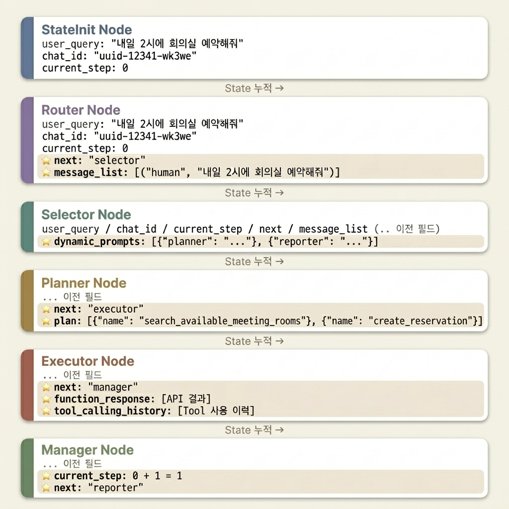
3-4. Dynamic Prompt와 Safety Guard
이 플랫폼에서 중요했던 또 하나의 부분은 Prompt를 정적으로 하드코딩하지 않고, DB 기반 포맷과 node별 snippet 체계로 운영한 방식입니다. 기본 프롬프트 포맷을 회사·에이전트·기능별로 불러온 뒤, Selector 단계에서 사용자 질의와 관련 있는 프롬프트 힌트만 골라 Planner, Executor, Reporter에 반영합니다.
Dynamic Prompt의 의미
- 기본 시스템 프롬프트와 추가 힌트를 분리할 수 있음
- 업무/회사/의도별 Prompt 정책을 DB에서 관리할 수 있음
- 도구 사용 규칙, 응답 형식, 예외 처리 정책을 node 단위로 분리 가능
- 모델 변경 시 Prompt 조정 범위를 좁힐 수 있음
Safety Guard의 의미
- Supervisor 초입에서 정책 위반 분류를 수행
- safe일 때만 Task Agent로 진입
- LLM Hacking, 범죄, 혐오, 자해, 성적 콘텐츠 등 카테고리화
- 단순 보안 장치가 아니라 전체 라우팅의 선행 조건으로 작동
# Representative Prompt Strategy (sanitized)
base_prompt = load_prompt_format(company_code, agent_name)
hints = selector_llm.filter(dynamic_prompt_snippets, user_query)
final_prompt = compose(
base_prompt=base_prompt,
user_objective=user_system_prompt,
attachments=attachment_block,
hints=hints,
current_time=now()
)
# Prompt Guard
classification = prompt_guard_llm.invoke(user_query)
if classification["safety"] != "safe":
return safe_refusal_message()
Prompt는 업무 규칙과 시스템 제약을 모델이 따를 수 있는 형식으로 번역하는 작업이라고 생각합니다. 특히 Planner / Executor / Reporter를 역할에 나눠지는 구조에서는 각 LLM의 작업마다 Prompt가 역할 분리가 되어야 합니다.
3-5. 뉴스 큐레이션 Agent
뉴스 큐레이션 Agent는 자연어 요청을 키워드 기반 뉴스 검색과 정기 구독 흐름으로 연결하는 Agent입니다. 구현 관점에서 보면 자연어 → 키워드 추출 → 뉴스 수집 → 중복 제거 → LLM 필터링 → 결과 전달의 파이프라인이며, FastAPI 서비스 레이어, JWT 인증, ContextVar 기반 로깅 격리, 외부 API 연동, 배포·모니터링 구조가 함께 정리되어 있습니다.
기술적으로 인상적이었던 부분
- 사용자 질의에서 LLM을 사용한 뉴스검색 keyword 분류 및 추출
- Naver API와 Deep Search API를 외부 API로 뉴스 검색
- Shingle 유사도 기반 중복 제거 후, LLM을 사용한 최종 뉴스 결과 선별
- Docker / Helm / GitHub Actions / Grafana / OpenTelemetry로 운영 까지 연결
| 구간 | 역할 | 포트폴리오 관점 의미 |
|---|---|---|
| LLM 키워드 추출 | 자연어 요청을 검색 가능한 질의로 정규화 | LLM을 생성기보다 라우터/전처리기로 활용 |
| 중복 제거 | 유사 기사 제거 | 실서비스 품질은 “무엇을 제거하느냐”도 중요하다는 점을 보여줌 |
| 배치 LLM 필터링 | 최종 기사 선별 | LLM 비용과 처리량을 함께 고민한 흔적 |
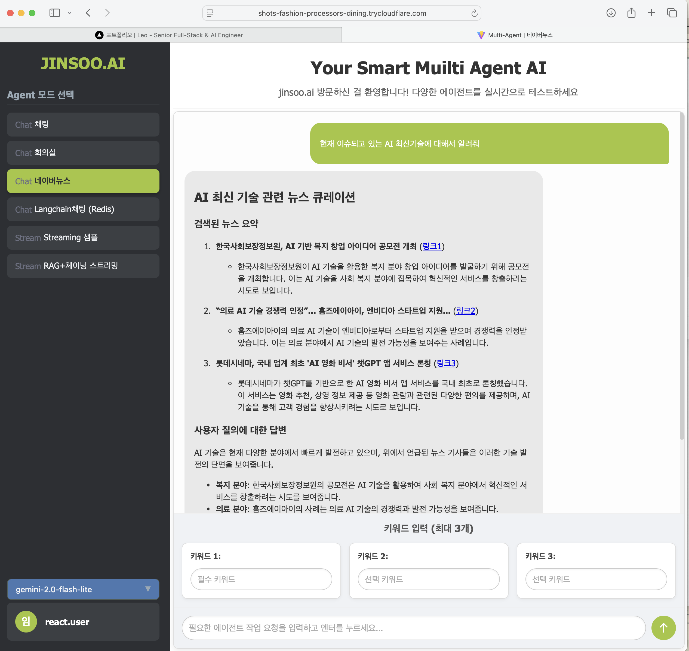
3-6. 법무서비스 Agent
법무서비스 Agent는 법률 검색, 자문, 계약서 추천·작성·검토를 자동화하는 멀티 Agent 구조입니다. 이 프로젝트에서 중요했던 점은 단순 검색이 아니라, 원본 데이터 저장소와 검색 최적화 인덱스를 분리하고, 하이브리드 검색과 다단계 Reasoning을 결합했다는 데 있습니다.
데이터 계층 분리
PostgreSQL은 원본 법령/판례/자문 메타데이터와 관계형 구조를 보관합니다. Azure AI Search는 벡터와 키워드 검색을 위한 인덱스를 담당합니다. 검색 시에는 Azure AI Search가 먼저 후보를 찾고, 이후 PostgreSQL에서 메타데이터와 참조 정보를 보강합니다.
검색 전략
벡터 검색, 키워드 검색(BM25), 시멘틱 검색을 조합해 RRF로 최종 순위를 구성합니다. NER/키워드 추출과 Reasoning 노드가 검색 쿼리 자체를 재구성하며, 단순 FAQ를 넘어서 구조화된 법률 질의를 처리하도록 설계되어 있습니다.
# Representative Retrieval Concept (sanitized)
query_vector = get_embedding(user_query)
law_results = law_client.hybrid_search(
query="민법 제750조 불법행위",
vector=query_vector,
k=3,
)
prec_results = prec_client.hybrid_search(
query="불법행위 손해배상",
vector=query_vector,
k=3,
)
all_results = enrich_with_metadata(law_results + prec_results)
return all_results
[원본 법령/판례/자문] ──▶ [PostgreSQL 저장]
│
├─ 청킹 / 임베딩
▼
[Azure AI Search 인덱스]
│
▼
[검색 실행 시]
Query Embedding + Keyword + Semantic Ranking
│
▼
후보 문서 반환 → PostgreSQL 메타데이터 보강 → Agent 응답 생성
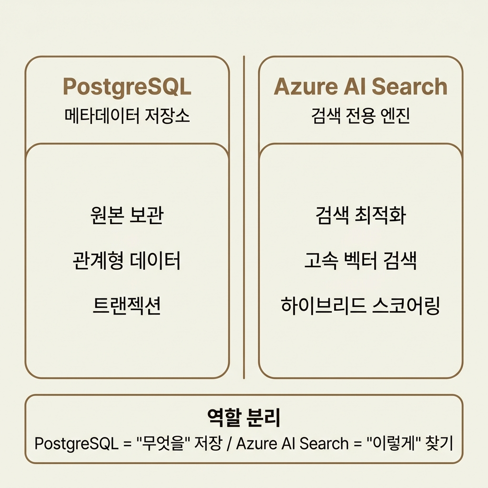
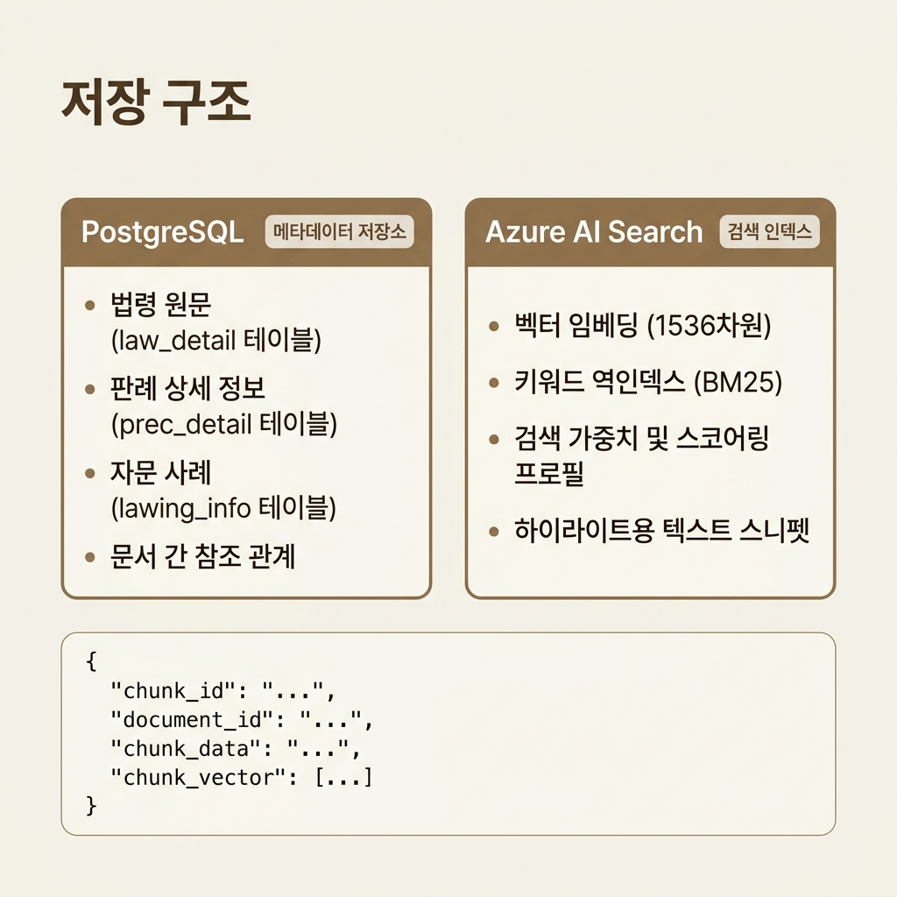
3-7. 설계 판단과 회고
이 프로젝트를 통해 제가 가장 크게 배운 것은, AI Agent 서비스를 설명할 때 “모델이 무엇을 답했는가”보다 요청이 어떤 구조를 지나갔고, 어떤 상태가 저장되며, 어떤 Prompt와 Tool이 결합되었는가가 더 중요하다는 점입니다.
학습 1
LangGraph는 단순 체인이 아니라 상태 전이와 책임 분할을 설계하는 도구다.
학습 2
Prompt는 모델 지시문이면서 동시에 업무 규칙과 API 제약을 번역한 실행 사양서다.
학습 3
실서비스형 AI는 인증, 로그, 상태 복원, 사용자 피드백 루프를 함께 고려해야 한다.
이 프로젝트는 저에게 “AI를 잘 쓰는 법”보다 “AI가 실제 업무 시스템 속에서 동작하도록 만드는 법”을 더 강하게 가르쳐 준 프로젝트였습니다.
4. Microsoft 365 MCP Platform 설계 및 구현
두 번째 프로젝트는 Microsoft 365 기능을 AI Agent에서 재사용할 수 있도록 MCP 형태로 표준화한 작업입니다. 저는 이 프로젝트를 단순한 API 중계가 아니라, 공통 인증·로깅·토큰 컨텍스트와 도메인별 Tool 서버를 분리한 플랫폼화로 이해하고 설계했습니다.
특히 메일/Teams처럼 개인 보안 성격이 강한 기능과, 일정/To Do처럼 앱 권한 기반으로 타인 일정 조회 요구가 생길 수 있는 기능을 하나의 권한 모델로 처리하지 않고, 위임 권한(Delegated Permission)과 앱 권한(Application Permission)을 기능 특성에 맞게 분리한 점이 핵심입니다.
4-1. 문제 정의와 설계 원칙
AI Agent가 실제 업무에서 유용해지려면, 모델이 스스로 아무 일도 하지 못하는 상태에서 벗어나야 합니다. 일정 조회, 메일 확인, Teams 메시지 조회, SharePoint 문서 연계 같은 기능을 Agent가 도구처럼 재사용할 수 있어야 합니다. 그러나 이 과정은 단순 API wrapping으로 끝나지 않습니다.
인증은 누가 소유할 것인지, 토큰은 어디에서 갱신할 것인지, 로그는 어떤 단위로 남길 것인지, 사용자 컨텍스트는 어떻게 전파할 것인지가 모두 설계 대상입니다. 따라서 이 프로젝트의 목표는 “Graph API를 몇 개 붙였다”가 아니라, 다양한 Microsoft 365 기능을 안전하게 호출 가능한 공통 실행 모델을 만드는 것이었습니다.
설계 원칙 1
인증, 토큰, 요청 추적, 공통 로깅은 도메인 기능과 분리한다.
설계 원칙 2
기능 보안 성격에 따라 권한 모델을 분리하고, Agent가 직접 Credential을 소유하지 않도록 한다.
4-2. 위임 권한 / 앱 권한 분리 전략
이 프로젝트에서 핵심적으로 보여주고 싶은 부분은 권한 분리 전략입니다. 메일과 Teams는 개인 계정 맥락과 보안 요구가 강하게 연결되므로, 사용자를 대신해 동작하는 위임 권한이 더 자연스럽습니다. 반면 일정 조회나 To Do는 조직 기준의 공용 읽기나 타인 일정 조회 요구가 발생할 수 있어, 별도 시나리오에서는 앱 권한 기반 처리가 더 적절할 수 있습니다.
| 기능군 | 권한 모델 | 설계 이유 | 포트폴리오에서 강조할 포인트 |
|---|---|---|---|
| Mail / Teams | Delegated Permission | 개인 사용자 문맥과 보안 요구가 강함 | 사용자 토큰을 state에 연결하고, 위임 흐름을 안전하게 제어 |
| Calendar / To Do | Application Permission (시나리오 분리) | 타인 일정 조회나 조직 단위 자동화 요구에 대응 | 기능 요구에 따라 권한 모델을 달리 선택한 설계 판단 |
저는 이 프로젝트를 통해 “하나의 Graph API라도 기능마다 권한 경계가 다르다”는 점을 더 분명하게 이해했습니다. 권한 모델을 기술 기준이 아니라 업무 맥락과 보안 성격 기준으로 나누는 것이 중요했습니다.
4-3. 공통 서비스 + 도메인별 FastMCP 구조
구현 구조는 크게 공통부와 도메인부로 나뉩니다. 현재 공개 저장소 기준으로 Mail·Teams 도메인과 공통 소스(cmn)를 함께 관리하고, 공통부는 FastAPI 기반으로 인증, 로깅, 사용자 컨텍스트, trace_id, 토큰 상태를 담당합니다. 도메인별 MCP 서버는 FastMCP 기반 Tool 실행에 집중합니다. 이 구조는 기능이 늘어날수록 장점이 커집니다. 공통부는 한 곳에서 진화하고, 도메인 Tool은 일정, 메일, Teams, SharePoint 등으로 독립적으로 확장할 수 있기 때문입니다.
Figure 4. 공통부와 도메인별 MCP 서버 분리 구조
# Representative Architecture Idea (sanitized)
# common (FastAPI)
app = FastAPI()
app.add_middleware(HttpMiddleware)
app.add_middleware(HttpLoggingASGIMiddleware)
app.add_middleware(MCPLoggingMiddleware)
# domain MCPs (FastMCP)
mail_mcp = FastMCP(name="mail-teams-mcp")
calendar_mcp = FastMCP(name="calendar-todo-mcp")
# common context
request.state.trace_id = get_or_create_trace_id(headers)
request.state.user_token = headers.get("mcp_user_token")
request.state.user_info = lazy_decode_if_needed(request.state.user_token)
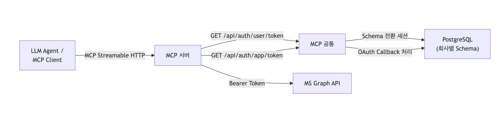
4-4. 요청 상태, 로깅, 추적성 설계
MCP Platform의 강점은 기능 목록보다도 추적성에 있습니다. 요청 헤더에서 `x-request-id`와 `mcp_user_token`을 읽어 `request.state`에 담고, 도구 실행 과정 전체를 동일한 trace_id로 연결합니다. 이 구조는 단일 요청이 어떤 Tool을 호출했고, Graph API까지 어떻게 흘러갔는지 한 번에 추적할 수 있게 합니다.
HTTP Header x-request-id (없으면 생성)
│
├─ [http_request] 로그
├─ [mcp_tool_call] 로그
└─ [GraphAPI Request] 로그
│
└─ 응답 헤더 x-request-id 로 반환
또한 사용자 토큰을 요청 초기에 모두 해석하지 않고, 실제 Tool 실행 시점에 한 번만 Lazy 파싱한 뒤 state에 캐시하는 방식은 효율성과 구조의 명확성을 함께 확보합니다. 각 Tool 함수는 이메일과 회사코드를 다시 파싱하지 않고 state의 저장된 정보로부터 꺼내 사용할 수 있습니다.
def resolve_email(explicit_email: str | None, user_info, default_email: str | None):
if explicit_email:
return explicit_email
if user_info and user_info.email:
return user_info.email
return default_email
async def before_tool_call(request):
if not getattr(request.state, "user_info", None):
request.state.user_info = lazy_decode_user_token(request.state.user_token)
logger.info("[mcp_tool_call] trace_id=%s tool=%s", request.state.trace_id, request.url.path)
@calendar_mcp.tool()
async def list_calendar(...):
email = resolve_email(email, request.state.user_info, DEFAULT_EMAIL)
return await graph_calendar_client.list_events(email=email, ...)
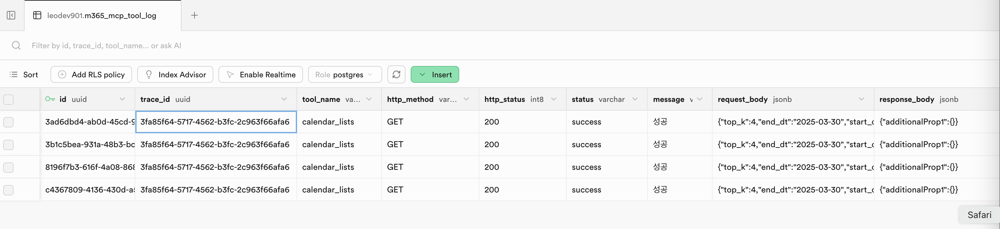

5. 차량 매뉴얼 문서 검색형 RAG PoC
세 번째 프로젝트는 차량 매뉴얼을 대상으로 한 문서 검색형 RAG PoC입니다. 이번 장은 첨부된 코드 파일을 기준으로만 설명합니다. 별도의 제품 소개나 외부 설명 없이, 실제 파이썬 스크립트에서 확인되는 구현 흐름을 그대로 포트폴리오 언어로 정리했습니다.
이 PoC의 구조는 비교적 명확합니다. PDF를 의미 단위 chunk로 파싱하고, 제목·본문·표 내용을 임베딩 가능한 텍스트로 변환한 뒤, 모델명 필터 기반으로 검색 가능한 저장소에 적재하고, 최종적으로 질의 임베딩과 키워드 기반 하이브리드 검색을 수행합니다.
5-1. 문제 정의
차량 매뉴얼은 단순 텍스트 문서가 아닙니다. 본문 외에도 표, 제목 구조, 페이지 번호, 헤더·푸터, 중복 문구가 섞여 있습니다. 따라서 문서를 그대로 임베딩하면 검색 품질이 떨어질 수 있습니다. 이 PoC는 먼저 문서를 검색 친화적인 구조로 재구성하는 데 초점을 둡니다.
문제 1
표가 텍스트와 섞여 추출되면 같은 내용이 중복 저장될 수 있다.
문제 2
헤더·푸터·페이지 번호는 검색에 노이즈가 된다.
문제 3
제목 구조를 반영하지 않으면 답변의 문맥성이 약해진다.
5-2. PDF 파싱과 청킹 전략
`AdvancedManualParser`는 PyMuPDF를 이용해 PDF를 열고, 각 페이지를 순회하면서 표와 텍스트를 분리 추출합니다. 핵심은 표를 먼저 Markdown으로 변환하고, 해당 표 영역의 bbox를 기록해 이후 텍스트 블록 추출 시 중복을 방지하는 점입니다.
# Representative Parser Logic (sanitized from AdvancedManualParser)
class AdvancedManualParser:
HEADING_MIN_SIZE = 11.0
MARGIN_TOP = 50
MARGIN_BOTTOM = 50
def parse_page(self, page_num):
page = self.doc[page_num]
md_tables, table_bboxes = self.extract_tables_to_markdown(page)
blocks = page.get_text("dict", sort=True)["blocks"]
current_chunk = {"page": page_num + 1, "heading": "Intro/General", "content": [], "tables": []}
for block in blocks:
if "image" in block:
continue
block_bbox = fitz.Rect(block["bbox"])
if block_bbox.y1 < self.MARGIN_TOP or block_bbox.y0 > (page.rect.height - self.MARGIN_BOTTOM):
continue
if any(block_bbox.intersects(tb) for tb in table_bboxes):
continue
# 글자 크기 기준으로 제목/본문 판별
...
핵심 포인트
- 표를 단순 텍스트로 흩뜨리지 않고 Markdown 구조로 보존함
- 헤더/푸터 제거로 검색 노이즈를 줄임
- 글자 크기 기준으로 제목을 감지해 문맥을 보존한 Chunk 전략
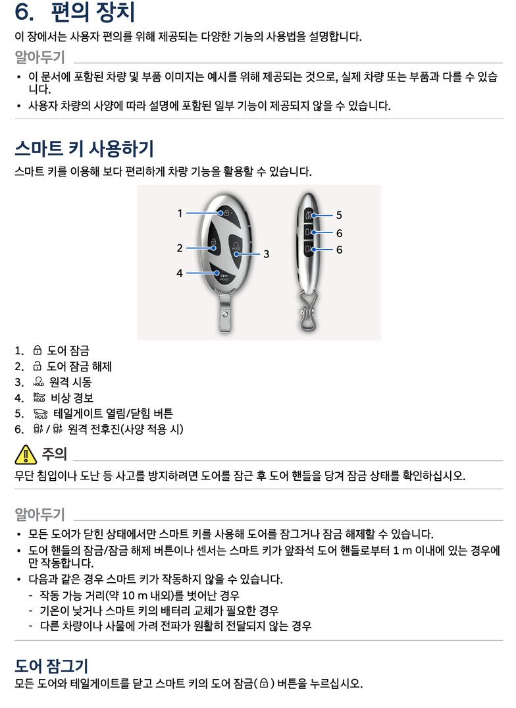
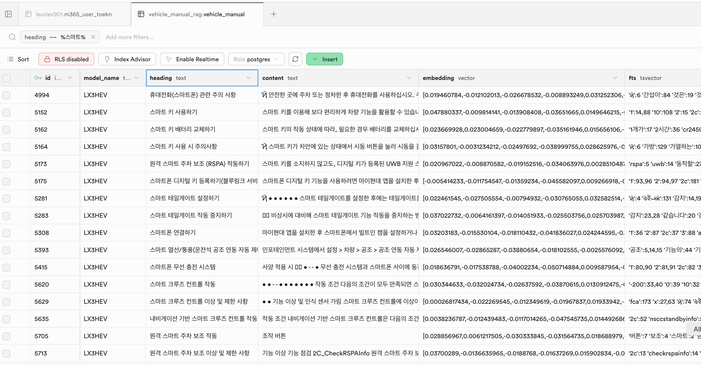
5-3. 임베딩 적재
적재 스크립트는 파싱된 chunk를 제목 + 본문 + 표 내용으로 합친 뒤, `multilingual-e5-large` 모델로 임베딩합니다. 여기서 e5 계열 모델 특성에 맞춰 문서 임베딩 시 `passage:` 접두어를 붙였습니다.
# Representative Embedding Logic (sanitized)
def generate_embedding_text(chunk):
content_str = " ".join(chunk["content"])
table_str = "\n".join(chunk["tables"]) if chunk["tables"] else ""
full_text = f"passage: 제목: {chunk['heading']} 내용: {content_str} {table_str}"
return full_text.strip()
for chunk in chunks:
text_to_embed = generate_embedding_text(chunk)
vector = model.encode(text_to_embed).tolist()
row = {
"model_name": TARGET_MODEL_NAME,
"heading": chunk["heading"],
"content": " ".join(chunk["content"]),
"page_num": chunk["page"],
"metadata": {"tables": chunk["tables"]},
"embedding": vector,
}
batch_data.append(row)
# 50건 단위 업로드
또한 차량 모델명을 기준으로 필터링할 수 있도록 `model_name`을 임베딩과 함께 저장하고, 50건씩 배치 업로드하는 방식으로 대량 적재 부담을 줄였습니다. 이 구조는 PoC 단계에서는 단순하지만, 이후 모델별 문서군이 늘어날 때 상당히 실용적인 설계입니다.
5-4. 하이브리드 검색 설계
검색 스크립트는 질의에 대해 `query:` 접두어를 붙여 임베딩을 생성하고, 동시에 원문 질의를 키워드 검색용 텍스트로 전달합니다. 그리고 `full_text_weight`와 `semantic_weight`를 분리해 의미 기반 검색 비중을 더 높게 주고 있습니다.
# Representative Hybrid Search Logic (sanitized)
def search_hybrid(user_query, top_k=3):
query_prefix = f"query: {user_query}"
query_vector = model.encode(query_prefix).tolist()
params = {
"query_text": user_query,
"query_embedding": query_vector,
"match_count": top_k,
"filter_model": TARGET_MODEL_NAME,
"full_text_weight": 1.0,
"semantic_weight": 2.0,
}
response = supabase.rpc("hybrid_search", params).execute()
return response.data
이 검색의 장점
- 정확한 키워드 매칭과 의미 유사도를 동시에 고려
- 차량 모델별 필터링이 가능
- 결과를 `heading` + `page_num` 단위로 보여줄 수 있어 문맥 설명이 쉬움
남아 있는 과제
- 검색 결과 재정렬(re-ranking) 여부 검토
- 질의 유형별 가중치 튜닝 자동화
- 표 내용 요약과 본문 요약을 분리하는 후처리
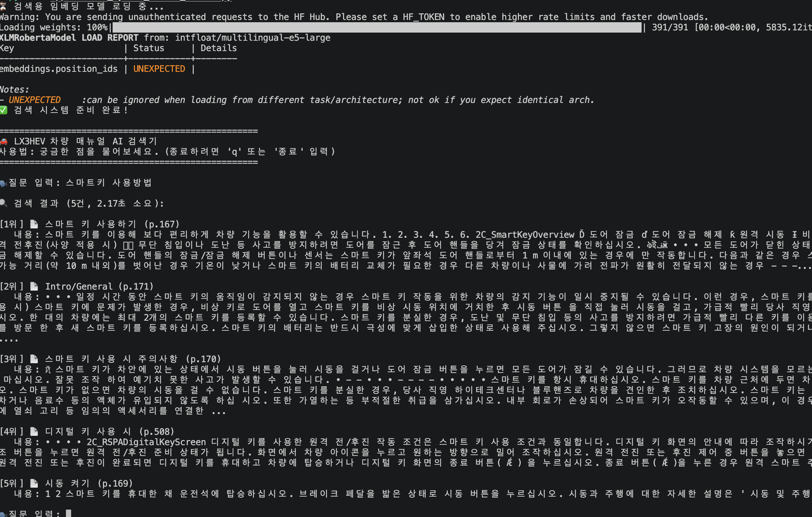
5-5. 결과, 한계, 확장 아이디어
이 PoC는 “RAG를 붙였다” 수준이 아니라, 문서를 검색 가능한 지식 단위로 바꾸기 위한 전처리 작업이 얼마나 중요한지 보여줍니다. 특히 차량 매뉴얼처럼 구조가 복합적인 문서는 파서 품질이 검색 품질에 그대로 연결됩니다.
향후 확장 방향으로는 다음을 생각할 수 있습니다. 첫째, 사용자 질문을 질의 유형별로 분류해 검색 전략을 다르게 적용하는 것, 둘째, 결과 chunk를 그대로 보여주는 대신 답변 생성 단계에서 문맥 재조합을 넣는 것, 셋째, 이미지/도표 이해가 필요한 경우 OCR이나 별도 멀티모달 경로를 추가하는 것입니다.
이 프로젝트는 문서 검색형 RAG에서 “임베딩 모델 선택”보다 먼저, 문서를 어떤 단위로 잘라서 어떤 형태로 저장할 것인가가 핵심이라는 점을 잘 보여줍니다.
6. 종합 정리: 구현하고 싶은 엔지니어링 가치
이번 포트폴리오에서 한 가지만 남긴다면, 저는 새로운 AI 프레임워크를 빠르게 써보는 개발자이기도 하지만, 그보다는 실제로 돌아가는 서비스를 만드는 일이 더 몸에 배어 있는 엔지니어입니다.
폐쇄망 Enterprise AI Agent 프로젝트에서는 상태, 계획, 도구 실행, Prompt, 안전성 검증, 스트리밍 응답, 업무 적용 구조를 하나의 운영 시스템으로 바라보는 관점을 보여주었습니다. Microsoft 365 MCP 프로젝트에서는 공통 인증과 로깅, 토큰 컨텍스트, 권한 분리 설계를 통해 외부 시스템 연동을 플랫폼화하는 능력을 보여주었습니다. 차량 매뉴얼 RAG PoC에서는 문서를 파싱하고 임베딩 적재와 하이브리드 검색까지 이어지는 문서 기반 AI 파이프라인을 직접 구현했습니다.
제가 지향하는 AI Engineer의 역할은 단순한 챗봇 구현보다도, 현장의 데이터와 시스템을 실제로 연결해 행동 가능한 Agent를 만드는 데 가깝다고 생각합니다. 저의 강점은 바로 이 지점, 즉 업무 시스템 이해와 백엔드·운영 안정성, 그리고 AI Agent 구조화 경험이 한데 연결된다는 데 있습니다.
제가 잘하는 일
복잡한 요구사항을 워크플로우, API, 데이터 구조로 바꾸고 운영 가능한 시스템으로 정리하는 일
제가 기여하고 싶은 일
LLM과 Agent를 현장 데이터·업무 시스템·운영 제약과 연결해 실효성 있는 AI로 만드는 일
제가 지키고 싶은 원칙
AI 기능은 멋있게 보이는 것보다, 실제 사용자와 운영 환경에서 신뢰 가능해야 한다는 원칙
부록
부록 A. 개인 포트폴리오 홈페이지
- https://leodev901.github.io/portfolio — 개인 포트폴리오 사이트
부록 B. GitHub 공개 저장소 링크
- mcp-mail — Mail / Teams 도메인과 MCP 공통 소스(cmn)를 포함한 MCP 서버
- mcp-sample — Calendar / To Do 중심 MCP 서버
- llm-multi-agent-backend — 개인 Multi-Agent 챗봇 백엔드
- health-chat LLM을 사용한 의도분류 및 Langgraph 샘플 Health Care 챗봇